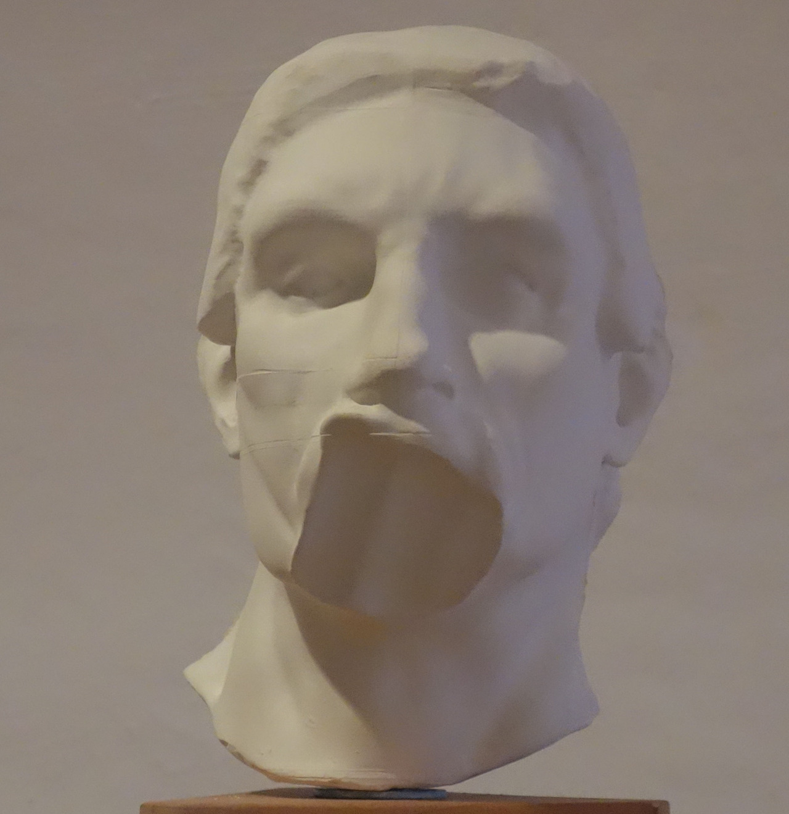

Thinking some more
 (The Thinker’s portrait)
(The Thinker’s portrait)
plaster, 35x40x45cm, video installation, 2x3.6m
2017
A sétálva gondolkodó ötlete a filozófusok, írók, gondolkodók jól ismert rendszeres sétáiból és persze abból a profán helyzetből született, hogy a házunk udvarán én is gyakran fel-alá járkálva gondolkodom.
Készült egy 3D scan az eredeti szoborról, amit az animáción számítógéppel mozgattam meg. Az eredetivel ellentétben nem ül, hanem gondolataiba mélyedve a doboz két fala között mászkál fel-alá és morfondírozik.
Rodin gyakran felülírja a naturalista ábrázolást és az anatómiai hűséget. Elkülönítve a szobor fejét és leválasztva a kézfejet az arcáról egyértelművé válik, hogy Rodin olyan mélyre helyezte a kézfejet, hogy nem marad hely az állkapocsnak. A gondolkodó, nem egy valódi alak másolata kőből megmintázva, hanem attól jócskán elvonatkoztatott szobor. Ez a “művészi túlzás” itt is tetten érhető.
untitled (small Rodin) Izgalmasnak találtam Rodin naturalista és expresszív eszköztára, valamint az analízis direkt kölcsönhatását egy médiumon belül. I found the interaction between Rodin’s naturalistic, expressive tools, and its analysis to meet in the very same medium exciting.
 Óbudai Társaskör Gallery, installation view, 2019
Óbudai Társaskör Gallery, installation view, 2019
 closeup